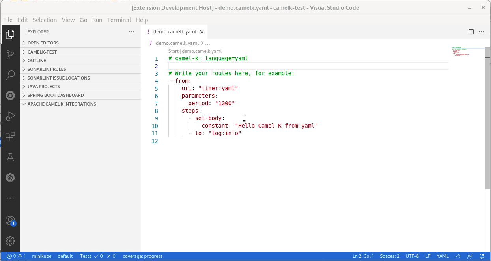
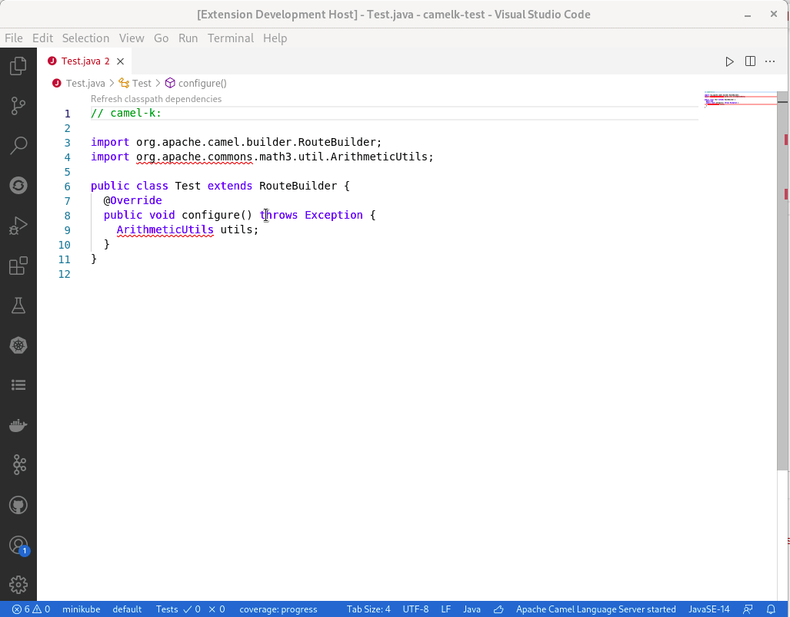

A new release of VS Code Tooling support for Apache Camel K 0.0.26 is available. It notably includes compatibility with Camel K 1.5.0 and Code Lenses.
Compatibility with Camel K 1.5.0
The Camel K binary provided by default is now 1.5.0. The commands are using the new API.
Note: It is working too with Camel K 1.4.0 productized by Red Hat. The needed features were backported.
Code Lenses
A Code Lens is an information provided inside text editor. It is often used to provide also actions. This release introduces two Code Lenses in Camel K files.
Code Lens to Start an Integration
When a Camel K file is opened in the text editor, a Start link appears at the top of the editor. When clicking on it, it triggers the classic command to Start a Camel K integration which is available from command palette.

Note: The Camel K file must use a .camelk. filename notation or have a Camel K modeline.
Code Lens to Refresh Classpath dependencies
In previous release, a command was introduced to refresh the classpath dependencies of Camel K integration files written in Java. See announcement. There is now a Code Lens at the top of the editor.

Note: The action can take several seconds. There is no feedback on the progress, please be patient.
Migration
Didact tutorial fix
For users that upgrade and that are using Didact, to have a working tutorial, these manipulations are required:
- Update VS Code Didact extension to 0.0.4
- Remove VS Code Tooling for Camel K
- Shutdown and start again VS Code
- Open command palette and call
Didact: Clear Tutorial Registry - Shutdown and start again VS Code
- Install VS Code Tooling for Camel K 0.0.26
- Reload window
VS Code Camel K Task about resource
To allow providing several resources, the resource attribute has been replaced by resources.
For instance, this content:
"tasks": [
{
"type": "camel-k",
"resource": "path/to/file.xx",
(...)
},
must be migrated to:
"tasks": [
{
"type": "camel-k",
"resources": ["path/to/file.xx"],
(...)
},
What’s next?
Provide your feedback and ideas!
You can start discussions on Zulip camel-tooling channel.
You can create and vote for issues on GitHub VS Code Tooling support for Apache Camel K repositories.
You can create and vote for issues on the Jira used by the Red Hat Integration tooling team.